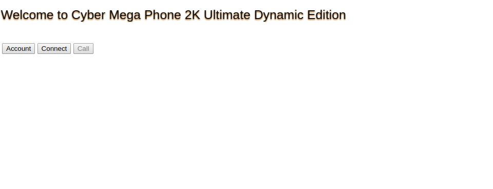
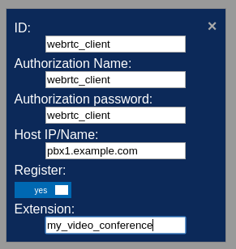
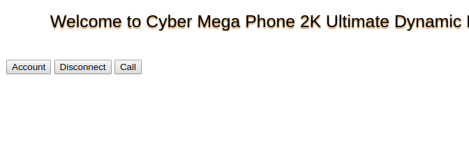
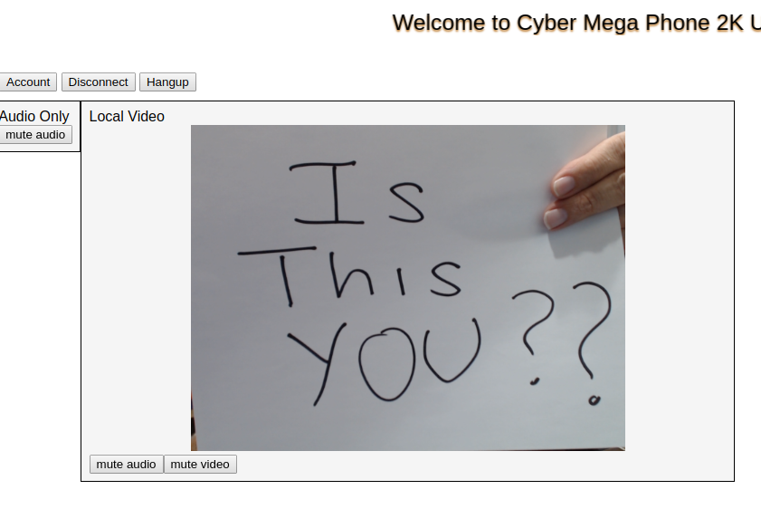

Prerequisites
Before proceeding, follow the instructions for Configuring Asterisk for WebRTC Clients and then use SIPML5 to test your connectivity by following the instructions at WebRTC tutorial using SIPML5. The instructions below assume you've completed those steps. Don't forget, Asterisk 15.5 or better is required.
You'll also need a working webcam and microphone on your client computer. CMP2K will not connect unless both are available.
Get The Code
The CyberMegaPhone (CMP2K) code is located in Asterisk's public Github repository at https://github.com/asterisk/cyber_mega_phone_2k. You can either download the code as a zip file or clone the repository using git. Which ever way you choose, download it now to the directory of your choice. We'll use /usr/src/asterisk/cyber_mega_phone_2k in the instructions below.
From an installation perspective, that's all there is to it. It's just configuration from now on.
As a reminder, we'll be using pbx.example.com as our hostname so substitute it with your own hostname or ip address.
Configure Asterisk
(Re)Configure the Asterisk HTTP Server
The CMP2K software needs to be served by a TLS capable web server. The easiest way to do this by far is to simply use Asterisk's built-in HTTP server. Here's what we need to add...
; Existing definition [general] enabled=yes bindaddr=0.0.0.0 bindport=8088 tlsenable=yes tlsbindaddr=0.0.0.0:8089 tlscertfile=<your_cert_file> tlsprivatekey=<your_key_file> tlscafile=<your_ca_cert_file> ; Add the following if not already present ; Allow the HTTP server to serve static content from /var/lib/asterisk/static-http enablestatic = yes ; Create an alias that will allow us to easily load the client in a web browser. redirect = /cmp2k /static/cyber_mega_phone_2k/index.html
Restart Asterisk or issue the CLI command "config reload /etc/asterisk/http.conf"
Now check that the configuration was applied. From the Asterisk CLI...
*CLI> http show status HTTP Server Status: Prefix: Server: Asterisk/GIT-16-a84c257cd6 Server Enabled and Bound to [::]:8088 HTTPS Server Enabled and Bound to [::]:8089 Enabled URI's: /test_media_cache/... => HTTP Media Cache Test URI /guimohdir_rh => HTTP POST mapping /httpstatus => Asterisk HTTP General Status /phoneprov/... => Asterisk HTTP Phone Provisioning Tool /amanager => HTML Manager Event Interface w/Digest authentication /backups => HTTP POST mapping /arawman => Raw HTTP Manager Event Interface w/Digest authentication /manager => HTML Manager Event Interface /rawman => Raw HTTP Manager Event Interface /static/... => Asterisk HTTP Static Delivery /amxml => XML Manager Event Interface w/Digest authentication /mxml => XML Manager Event Interface /moh => HTTP POST mapping /ari/... => Asterisk RESTful API /ws => Asterisk HTTP WebSocket Enabled Redirects: /cmp2k => /static/cyber_mega_phone_2k/index.html
Notice that there's a new Redirect entry.
For security reasons, the HTTP server will not serve arbitrary paths so the /static/cyber_mega_phone_2k/index.html path will actually resolve to is /var/lib/asterisk/static-http/cyber_mega_phone_2k/index.html. You can either move the CMP2K directory that you downloaded to /var/lib/asterisk/static-http or you can simply create a symlink to it as follows:
# cd /var/lib/asterisk/static-http # ln -s /usr/src/asterisk/cyber_mega_phone_2k
OK, let's test. From your web browser, visit https://pbx.example.com:8089/cmp2k remembering to substitute your hostname or ip address as appropriate.
Did you get?...

Great.
(Re)Configure PJSIP
In the Configuring Asterisk for WebRTC Clients tutorial, you created a PJSIP Endpoint named "webrtc_client". We need to modify that definition for our purposes.
[webrtc_client] type=endpoint aors=webrtc_client auth=webrtc_client dtls_auto_generate_cert=yes webrtc=yes context=default disallow=all ; We need to allow more codecs. ; vp8, vp9 and h264 are video pass-through codecs. ; No special Asterisk modules are required to support them. allow=opus,g722,ulaw,vp9,vp8,h264 ; Since video conferencing makes use of the Streams functionality added in Asterisk 15 ; we need to indicate the maximum number of streams allowed for audio and video. max_audio_streams = 1 max_video_streams = 15
You may already have some of the config from previous webrtc endpoints for certificates, keys, encryption, ice support etc and think you don't need to add the magical webrtc=yes but you do! The webrtc=yes flag does more than just shortcut already existing flags which are needed for proper SFU support.
There are two more Asterisk changes we need to make so no need to restart Asterisk just yet.
Configure app_confbridge
The sample confbridge.conf file is enough to get you going with one exception. In the default_bridge section, we need to set video_mode=sfu.
[default_bridge] type=bridge ; other stuff ; SFU is Selective Forwarding Mode ; Basically all participant's video streams are relayed to all other participants. video_mode = sfu
One more change...
Configure extensions.conf
Now we need to configure an extension that, when dialed, will put us into the video conference bridge, so add the following to extensions.conf
[default] exten = my_video_conference,1,Confbridge(MYCONF,default_bridge,default_user,sample_user_menu)
NOW, restart Asterisk!
Join the Conference Bridge!
Open a browser window and visit
https://pbx.example.com:8089/cmp2k
remembering to substitute your hostname or ip address as appropriate.
You should be back at the page you got when you tested earlier...
Click the Account button and fill in the details as follows...

Now click anywhere outside the edit box or click the X in the upper right corner to save the information and you'll be be back to the previous page.
Now click Connect and you should see the button change to Disconnect

You should have also seen an == Endpoint webrtc_client is now Reachable message on the Asterisk console (if you were looking).
Finally, click Call...
You may be prompted to allow access to your microphone and camera. If so, allow them both.
Now, did you hear the You are the only person in this conference prompt? Do you see yourself in the video preview window?

That's it!
Bonus Points
Have a friend or co-worker join the bridge. They can use the same webrtc_client credentials.
Recommendations
If you experience audio issues, it may be a good idea to turn on the jitterbuffer. This can cause the audio to be slightly delayed, but will also eliminate problems such as bursty audio packets causing disruptions. You can enable this option in confbridge.conf for a user, or you can do it through the dialplan before placing the user in the conference by using the JITTERBUFFER dialplan function for a more fine tuned experience.
{kind=link}
{kind=link}
{kind=link}
{kind=link}